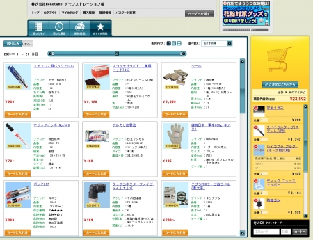

原崎 芳加
東京都小金井市出身。東京農工大学で生体医用工学に関する研究を行っています。
研究活動以外にもRuby on Railsを用いたWebサービスの開発について学習しております。
今後の学習のでは
<メッセージボード>

→メッセージのやり取りを行える簡単な掲示板
<ツイッタークローン>
→ツイッターのクローンサイト
<モノリスト> " />→商品の一覧を掲載
<オリジナルサービス>
→オリジナルサービス（考え中）
の作成を手がけます本ページを気になった方はGithub上で作成したサービスを公開しておりますのでご覧ください。